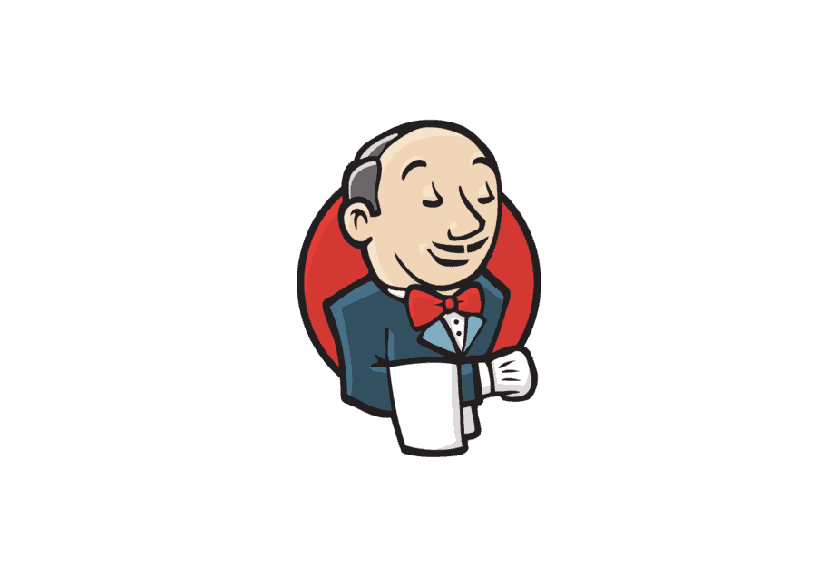
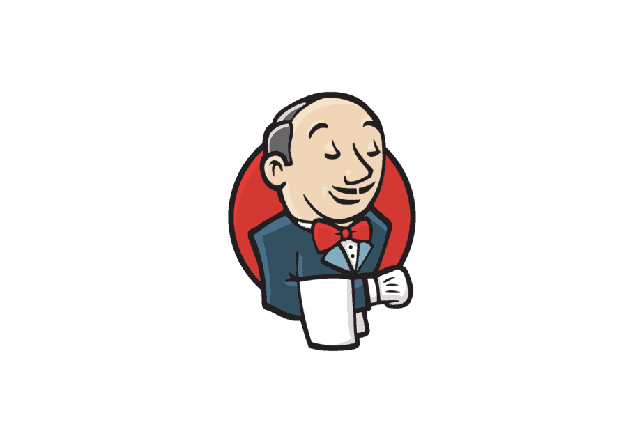

© Coded by Suvansh
Software Engineer
Crafting scalable software, user interfaces, and utilities is my passion. I excel at analyzing complex problems, envisioning elegant solutions, and bringing them to life with creativity and precision. Whether it's designing intuitive user experiences or architecting robust backend systems, I thrive on the challenge of creating solutions that are both beautiful and functional.
In my journey through tech titans like Dell EMC and MathWorks, I've honed my craft, navigating through complex codebases, spearheading infrastructural upgrades, and eradicating technical debts. Renowned as the ultimate team player, I seamlessly weave innovation with precision, relentlessly pushing the boundaries of what's possible in the digital realm.
I believe that nurturing a research-oriented approach is essential for maximizing efficiency and innovation. In my work, I blend established software design patterns with inventive solutions, optimizing problem-solving effectiveness. Noteworthy accomplishments include improving image classification with a modified agglomerative clustering algorithm and introducing a watermarking algorithm for image integrity verification. Additionally, I developed a streamlined testing method for software SDKs at Dell EMC, facilitating quicker version rollouts.
In my leadership role, I've mentored new engineers, facilitating rapid skill development. Known for my proactive approach, I've initiated projects to enhance organizational processes, such as implementing a logger for C++ microservices and developing a customer analysis tool. Additionally, I've created centralized dashboards for organization-wide events. My commitment to nurturing talent and driving efficiency is at the core of my leadership philosophy.
Embracing challenges, fueling innovation.
I am a technology-driven enthusiast with a fervent passion for software development and innovation. My journey began during my bachelor's program, where I actively participated in hackathons and coding competitions, cultivating my problem-solving skills and igniting a deep-seated interest in programming.
Following my undergraduate studies, I delved into diverse realms of technology, tackling intriguing AI projects and crafting full-stack web-based solutions aimed at real-world challenges. These experiences not only broadened my understanding but also fueled my determination to make impactful contributions in the software development sphere.
Driven by a thirst for knowledge and a relentless pursuit of excellence, I pursued further education, cracking the Graduate Aptitude Test in Engineering (GATE) and securing admission to the esteemed Indian Institute of Information Technology, Jabalpur, for my master's program in Computer Science Engineering. Here, I honed my skills in software engineering, complementing my academic endeavors with hands-on industry experience through internships at renowned organizations, where I contributed to the creation of high-quality software solutions.
A Glimpse of my range of work
 Classical Signal processing & Compression technique
Stiches Multiple Images to form Panorama
Vehicle Detection
Security image transmission Using Image Watermarking
Stock Market Predictor
Image Reconstruction using Deep learning
Task Scheduler
Logger for Microservices Architecture
Web Crawler
Classical Signal processing & Compression technique
Stiches Multiple Images to form Panorama
Vehicle Detection
Security image transmission Using Image Watermarking
Stock Market Predictor
Image Reconstruction using Deep learning
Task Scheduler
Logger for Microservices Architecture
Web Crawler
Timeline of various projects developed for organisations
Working alongside development team for MATLAB & Simulink
Worked on various interesting projects like:
1. Simulink Data Managemen: Designed infrastructure and interface to expand Simulink’s data source compatibility, facilitating seamless integration with diverse sources, including AWS, Excel, and custom data source specific to organisations.
2. Data Consistency Check for Simulink: Achieved a 50% improvement in Simulink’s simulation performance, directly benefiting strategic customers.
3. Logger for Performance Monitoring: Engineered a C++ logger for multi-component codebases, enabling real-time performance tracking of microservices, and triggering alerts for backend performance exceeding 10% to ensure proactive optimization.
4. Data driven Decisions: Developed Data Analysis tool for Engineering Managers to help analyse the customer’s product usage trend.
Working alongside development team for DELL EMC Powerscale, which is an industry leading storage product based on SCALE OUT NAS .
Worked on various interesting projects like:
1. Testing Framework: Developed a mocking server for Testing Powerscale SDK
2. Security Parser: Used Tries in order to find diff(Anomalies on Powerscale cluster)
3. CLI Implementation: Wrapper over Powerscale Rest APIs
4. Storage Monitoring: Helped in resolving security vulnerabilities and backend upliftment for the product.
and worked on few helper projects/scripts that made life of developers super easy.
Worked on Digitisation of Hospital management Software.
1. UI based management system, that manages all operations done by hospital
2. Developed database models resulting in multiple schemas, each managing one component.
Course Work:
Deep Learning
Un-supervised Machine Learning Advanced Data structures
Software Engineering
Encryption & Cryptography using C Digital Watermarking
M.TECH- Computer Science August 2020 - August 2022
Course Work:
Operating Systems
Database management Systems
Computer Networks
Data Structures & Algorithms Machine learning
Programming using Python Computer Graphics
Unix Tools and Scripting
B.TECH - Computer Science July 2016 - July 2020


 
